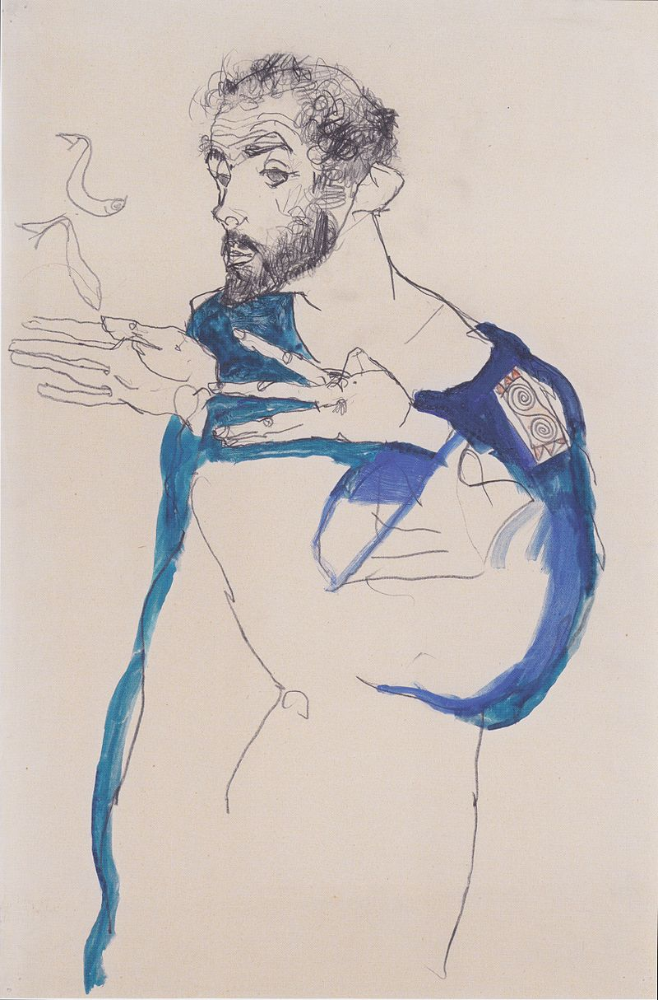
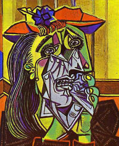
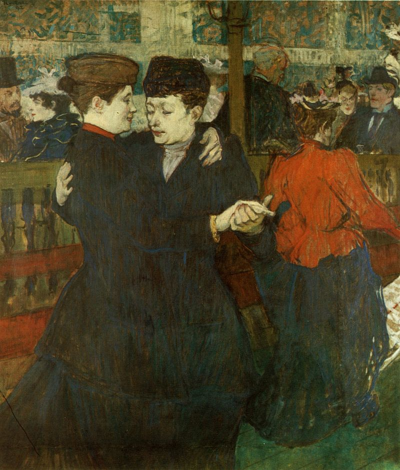

Postmodernism
Postmodernism is a body of art movements that sought to contradict some aspects of modernism or some...
Modernism

Modernism is both a philosophical movement and an art movement that, along with cultural trends
and changes, arose from wide-scale and far-reaching transformations in Western society during the late 19th and
early 20th centuries. Among the factors that shaped modernism were the development of modern industrial societies and
the rapid growth of cities, followed then by reactions of horror to World War I. Modernism also rejected the certainty
of Enlightenment thinking, and many modernists rejected religious belief.Modernism, in general, includes the activities
and creations of those who felt the traditional forms of art, architecture, literature, religious faith, philosophy,
social organization, activities of daily life, and sciences, were becoming
ill-fitted to their tasks and outdated in the new economic, social, and political environment of an emerging fully industrialized world. The poet Ezra
Pound's 1934 injunction to "Make it new!" was the touchstone of the movement's approach towards what it saw as the now
obsolete culture of the past. In this spirit, its innovations, like the stream-of-consciousness novel,
atonal (or pantonal) and twelve-tone music, divisionist painting and abstract art, all had precursors in the 19th century.
A notable characteristic of modernism is self-consciousness and irony concerning literary and social traditions,
which often led to experiments with form, along with the use of techniques that drew attention to the processes

and materials used in creating a painting, poem, building, etc. Modernism explicitly rejected the ideology of
realism[full citation needed] and made use of the works of the past by the employment of reprise, incorporation,
rewriting, recapitulation, revision and parody.Some commentators define modernism as a mode of thinking—one or more
philosophically defined characteristics, like self-consciousness or self-reference, that run across all the novelties
in the arts and the disciplines.More common, especially in the West, are those who see it as a socially progressive
trend of thought that affirms the power of human beings to create, improve and reshape their environment with the aid of
practical experimentation, scientific knowledge, or technology. From this perspective, modernism encouraged the
re-examination of every aspect of existence, from commerce to philosophy, with the goal of finding that which was
'holding back' progress, and replacing it with new ways of reaching the same end.Others focus on modernism as an aesthetic introspection. This facilitates consideration of specific reactions to the use of technology in
the First World War, and anti-technological and nihilistic aspects of the works of diverse thinkers and artists spanning
the period from Friedrich Nietzsche (1844–1900) to Samuel Beckett (1906–1989).While some scholars see modernism continuing into the twenty first century, others see it evolving into late modernism or
high modernism. Postmodernism is a departure from modernism and refutes its basic assumptions.
Modernism is both a philosophical movement and an art movement that, along with cultural trends and changes, arose
from wide-scale and far-reaching transformations in Western society during the late 19th and early 20th centuries.

Among the factors that shaped modernism were the development of modern industrial societies and the rapid growth of
cities, followed then by reactions of horror to World War I. Modernism also rejected the certainty of Enlightenment
thinking, and many modernists rejected religious belief.Modernism, in general, includes the activities and creations
of those who felt the traditional forms of art, architecture, literature, religious faith, philosophy,
social organization, activities of daily life, and sciences, were becoming ill-fitted to their tasks and outdated
in the new economic, social, and political environment of an emerging fully industrialized world.
The poet Ezra Pound's 1934 injunction to "Make it new!" was the touchstone of the movement's approach towards what
it saw as the now obsolete culture of the past. In this spirit, its innovations, like the stream-of-consciousness novel,
atonal (or pantonal) and twelve-tone music, divisionist painting and abstract art, all had precursors in the 19th century.
A notable characteristic of modernism is self-consciousness and irony concerning literary and social traditions,
which often led to experiments with form, along with the use of techniques that drew attention to the processes
and materials used in creating a painting, poem, building, etc.Modernism explicitly rejected the ideology of realism
[full citation needed] and made use of the works of the past by the employment of reprise, incorporation, rewriting,
recapitulation, revision and parody.Some commentators define modernism as a mode of thinking—one or more philosophically defined characteristics,
like self-consciousness or self-reference, that run across all the novelties in the arts and the disciplines.

Expressionism
Expressionism is a modernist movement, initially in poetry and painting, originating in Germany at the beginning of the...
Contemporary Art
Contemporary Art is the art of today, produced in the second half of the 20th century or in the 21st century....
Surrealism
Surrealism is a cultural movement that began in the early 1920s, and is best known for its visual artworks and writings.
Abstract Art
Abstract Art uses visual language of shape, form, color and line to create a composition which may exist with a degree of...